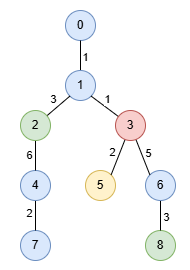
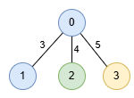

| Category | Difficulty | Likes | Dislikes |
|---|---|---|---|
| Algorithms | Hard | 29 | 6 |
array | hash-table | tree | depth-first-search | prefix-sum
google
You are given an undirected tree rooted at node 0, with n nodes numbered from 0 to n - 1. This is represented by a 2D array edges of length n - 1, where edges[i] = [ui, vi, lengthi] indicates an edge between nodes ui and vi with length lengthi. You are also given an integer array nums, where nums[i] represents the value at node i.
A special path is defined as a downward path from an ancestor node to a descendant node in which all node values are distinct, except for at most one value that may appear twice.
Return an array result of size 2, where result[0] is the length of the longest special path, and result[1] is the minimum number of nodes in all possible longest special paths.
Example 1:
Input: edges = [[0,1,1],[1,2,3],[1,3,1],[2,4,6],[4,7,2],[3,5,2],[3,6,5],[6,8,3]], nums = [1,1,0,3,1,2,1,1,0]
Output: [9,3]
Explanation:
In the image below, nodes are colored by their corresponding values in nums.

The longest special paths are 1 -> 2 -> 4 and 1 -> 3 -> 6 -> 8, both having a length of 9. The minimum number of nodes across all longest special paths is 3.
Example 2:
Input: edges = [[1,0,3],[0,2,4],[0,3,5]], nums = [1,1,0,2]
Output: [5,2]
Explanation:

The longest path is 0 -> 3 consisting of 2 nodes with a length of 5.
Constraints:
2 <= n <= 5 * 104edges.length == n - 1edges[i].length == 30 <= ui, vi < n1 <= lengthi <= 103nums.length == n0 <= nums[i] <= 5 * 104edges represents a valid tree.